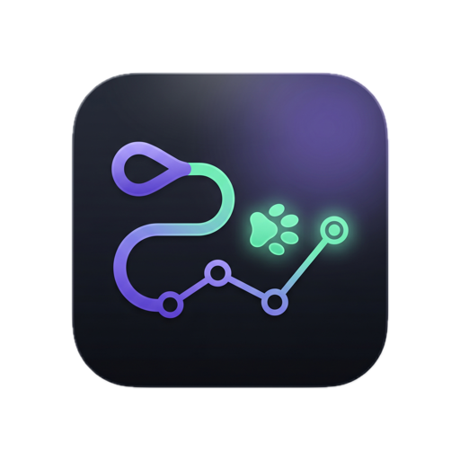
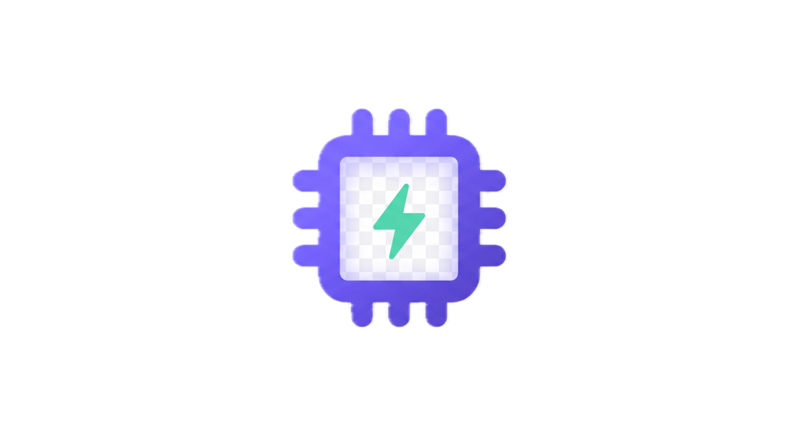

Your codebase as a canvas of states.
Kennel is a node-based agentic IDE. Every agent run and every command becomes a real, git-versioned node you can branch from, compare, and build on — no more disposable chat transcripts.
A kennel keeps and tends working agents.
Two off-canvas operators embody the metaphor — one builds the hounds, one walks them through the graph.
Designs reusable agent personas — with scoped permissions — and deterministic processes that are tested in isolation, with named, Airflow-XCom-style input/output contracts.

The autonomous orchestrator. It spawns and reads canvas nodes to plan and execute multi-step work — always on an autonomy leash (a node budget) you control.
The canvas, in motion.
Everything is a node. Every node is real.
No stubs, no simulations — real git commits, real model calls, real tools.
Git-versioned states
Each node is a real commit. Branch from any node to explore alternatives in parallel, diff them side by side, and check out any state.
Walker orchestration
Hand the wheel to an autonomous agent that plans and runs multi-step work across the graph — within the autonomy budget you set.
Personas & processes
The Care Taker builds reusable agent personas and deterministic, tested processes with named input/output contracts.
Parks — workflows
Declarative multi-node workflows: per-node outputs, tunable edge conditions, isolated workspaces, Report nodes, and cron scheduling.
Local & cloud models
Bring keys for Anthropic, OpenAI & Google — or run fully local with on-demand llama.cpp and recommended open models.
Web search & MCP
Keyless web search for agents, plus a real Model Context Protocol client to connect external tools and data sources.
From a repo to a graph of work.
Open a project
Point Kennel at a git repo. The root node is your codebase's current state.
Add a step
Drop an agentic node (persona-driven) or a deterministic command node onto the canvas.
Run it
Kennel works in an isolated workspace and commits the result as a new, inspectable node.
Branch & build
Compare diffs, check out any state, or let the Walker orchestrate many steps for you.
Run models entirely on your Mac.
The llama.cpp engine is downloaded on demand and ad-hoc-signed locally — nothing heavy bundled, nothing phoning home. Recommended open models are a click away.
- On-demand engine + curated open models
- Fully offline once downloaded
- Skippable first-run setup

Bring your own providers.
Connect Anthropic, OpenAI, and Google with your own API keys. Keys are encrypted on-device with the system keychain and never leave your machine except to call the provider you chose.
- Keys encrypted at rest (safeStorage)
- No telemetry — only the calls you initiate
- MCP servers for external tools
Start building on a canvas.
Free, open-source, and notarized for macOS. Download the universal build and drag Kennel into Applications.